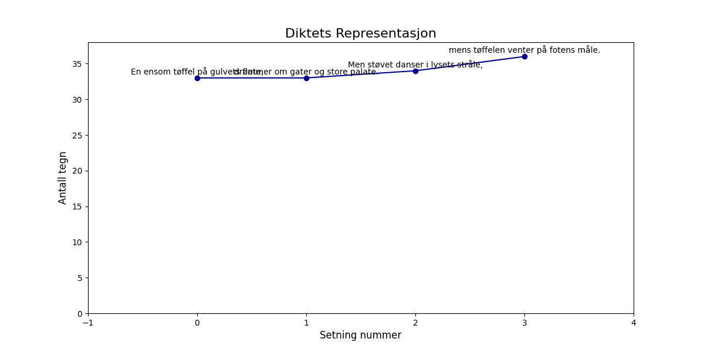

En ensom tøffel på gulvets flate, drømmer om gater og store palate. Men støvet danser i lysets stråle, mens tøffelen venter på fotens måle.

import matplotlib.pyplot as plt
import numpy as np
# Dikt
dikt = """
En ensom tøffel på gulvets flate,
drømmer om gater og store palate.
Men støvet danser i lysets stråle,
mens tøffelen venter på fotens måle.
"""
# Konverter dikt til numeriske verdier (eksempel)
# Dette er en veldig forenklet representasjon
# og kan justeres basert på ønsket visuell effekt.
sentences = dikt.strip().split('\n')
sentence_values = [i for i in range(len(sentences))]
# Lag en figur og akser
fig, ax = plt.subplots(figsize=(12, 6))
# Plot setningslengder som en linje
ax.plot(sentence_values, [len(s) for s in sentences], marker='o', linestyle='-', color='darkblue')
# Legg til tittel og etiketter
ax.set_title("Diktets Representasjon", fontsize=16)
ax.set_xlabel("Setning nummer", fontsize=12)
ax.set_ylabel("Antall tegn", fontsize=12)
# Juster akse-grenser
ax.set_xlim(-1, len(sentences))
ax.set_ylim(0, max([len(s) for s in sentences]) + 2)
# Legg til tekst fra diktet
for i, sentence in enumerate(sentences):
ax.text(i, len(sentence) + 0.5, sentence, ha='center', fontsize=10)
# Legg til en bakgrunn for å illustrere "gulvets flate"
ax.fill_between(np.arange(len(sentences)), 0, 0, color='lightgray', alpha=0.5)
# Lagre figuren
plt.savefig(output_path)execution_ok=True fallback_used=False image_ok=True